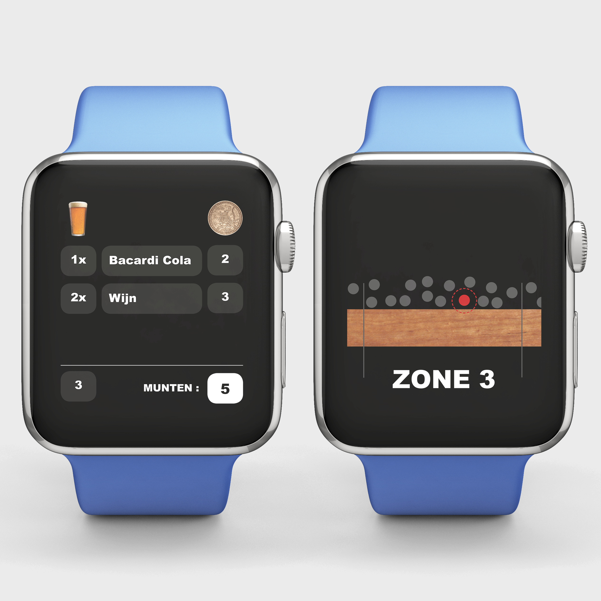

Het festival seizoen komt er weer aan. Lekker drankjes drinken en feesten met vrienden. Een van de problemen die je tijdens een festival hebt is het lange wachten en daarna de barvrouw of -man niet kunnen verstaan. Mijn oplossing: een interactieve wearable, die bezoekers van het festival kunnen dragen achter hun oor. Hierin zit een sensor die geconnected is met de sensor van de barman of barvrouw. De barman of barvrouw hebben om hun pols een schermpje waar de gegevens op binnen komen. De sensor weet wat de bezoeker wil drinken en dit wordt door gegeven aan de bar. De mensen achter de bar krijgen de bestelling binnen van de eerst volgende bezoeker. De sensor van de bezoeker meet dus ook wanneer je bij de bar aankomt en wanneer je aan de beurt bent. Via het schermpje kunnen de mensen achter de bar zien wat de eerst volgende bestelling is die ze moeten pakken. Wanneer ze dit gepakt hebben krijgen ze op het schermpje een afbeelding van de bar te zien, hierop word aangegeven waar de bezoeker ongeveer staat. De barmannen en barvrouwen hebben allemaal hun eigen zone waarvan ze de gegevens binnen krijgen. Zo hoeven zij niet naar alle kanten van de bar te lopen. De sensor voor de gebruiker achter hun oor meet de gedachten. Het is een klein apparaatje wat zo onzichtbaar mogelijk is. De sensor van de barmannen en barvrouwen zit in het apparaat om hun pols. Deze oogt als een smartwatch en kan in verschillende kleuren. Op deze manier worden de bestellingen snel afgerond zonder met elkaar te praten.
